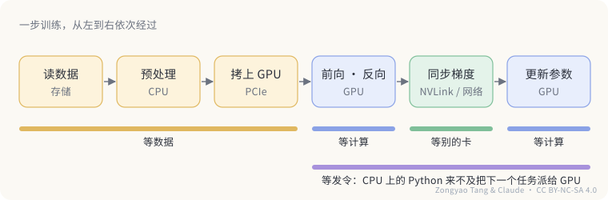

一门课 · 45 个单元
AI 系统：从深度学习原理到 GPU 与分布式训练

一门讲清原理的课：训练的一步在机器里到底经过了什么，慢的时候慢在哪里，怎样从现象一层层追到原因。从神经网络和 PyTorch 讲起，经过 GPU 与 CUDA、算子与 kernel、高速互联、NCCL，到分布式训练；集群、推理和强化学习三个部分是选读。
第一次读，先看第 0 部分（3 个单元），它是后面所有内容的地图。每个单元的讲解由几条原理组成，每条都有一个比方、一句“所以”，以及它承接哪一条、后面哪里会用到。
第 0 部分 · 全景与度量
第 1 部分 · 深度学习原理
第 2 部分 · PyTorch 执行栈
- 2.1张量与内存弄清一个张量在内存里是什么，哪些操作不拷贝数据，PyTorch 怎样管理显存，以及训练时显存都花在了哪。
- 2.2autograd 引擎弄清前向时计算图是怎样记下来的，backward() 又是怎样沿着它把梯度算回来的。
- 2.3从一行 Python 到一个 kernel跟着一次算子调用从 Python 走到 GPU，弄清中间每一层做什么、花多少时间。
- 2.4数据供给弄清一个 batch 是怎样被准备出来并送上 GPU 的，DataLoader 的每个参数在调管道的哪一段。
- 2.5torch.compile 的三层栈弄清 torch.compile 怎样把一段 Python 变成几个融合好的 kernel，以及它什么时候会失效。
- 2.6混合精度与单卡训练加速把单卡上其余的提速手段收齐：混合精度、融合优化器、专用库、模型简化。
第 3 部分 · GPU 与 CUDA 执行模型
- 3.1GPU 环境与第一次性能分析搭好 CUDA 开发环境，学会用 profiler 看清 PyTorch 程序到底慢在哪。
- 3.2第一个 CUDA kernel理解线程、线程块、网格，能独立写出并正确启动简单的 CUDA kernel。
- 3.3计算与内存架构知道 SM、warp、共享内存是怎么回事，用分块（tiling）写出明显更快的矩阵乘法。
- 3.4CUDA 性能清单掌握一套照着做就有效的 kernel 优化清单：合并访存、占用率、分支发散、线程粗化。
- 3.5并行模式：归约与扫描会写高效的并行归约，理解 scan 这类“看似串行”的计算怎么并行。
- 3.6stream、异步与 CUDA Graph弄清 CPU 给 GPU 发任务的机制：异步队列、stream、同步点，以及怎样减少发令的开销。
第 4 部分 · 算子与 kernel
- 4.1Transformer 的算子拆解把 1.4 的 Transformer 用原生 CUDA 写出来：从朴素 kernel 到能跑通的训练与推理。
- 4.2算子融合弄清算子融合为什么能消除多余的显存读写，并能看懂编译器生成的融合 kernel。
- 4.3Triton 入门用 Triton 写出性能接近手写 CUDA 的 kernel，体会“按块编程”。
- 4.4Flash Attention理解并实现 FlashAttention：分块 + 在线 softmax，减少注意力的显存读写。
- 4.5矩阵乘法的极限与 Tensor Core把 4.1 的 kernel 一步步优化，学会用 Tensor Core 做矩阵乘法。